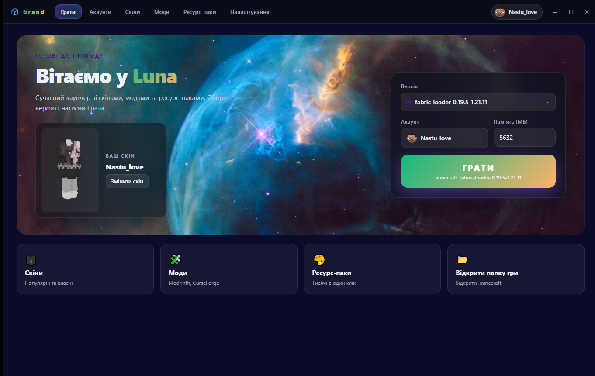

👤
Аккаунты
Оффлайн-режим и настоящий вход через Microsoft (Xbox). Аккаунт сохраняется, переключается в один клик.
Аккаунты, тысячи версий, моды, скины и полная кастомизация дизайна — всё в одном приложении. Выбери версию и жми «Играть».

Лаунчер делает самое скучное — скачивание версий, библиотек, модов и настройку Java.
Оффлайн-режим и настоящий вход через Microsoft (Xbox). Аккаунт сохраняется, переключается в один клик.
Все релизы Mojang, снапшоты, локальные профили и установка нужных библиотек автоматически.
Fabric, Quilt, Forge и NeoForge ставятся в один клик — вместе с API модов.
Поиск по базе Modrinth, установка нужной версии под твою сборку, апдейты и папка модов.
Тысячи популярных скинов, загрузка своих PNG 64×64 и живое 3D-превью прямо в лаунчере.
Темы с уникальными фонами, цвета, скругления, анимации, звук при наведении и панель слева/снизу/сверху/справа.
Установка паков и шейдеров в один клик, быстрый доступ к папке игры .minecraft.
Автопоиск Java, выбор объёма памяти, разрешение окна и режим полноэкранного режима.
Четыре экрана — от запуска игры до настроек оформления.
Главный экран
Что это, как работает и чем отличается от других лаунчеров.
Luna Launcher — самостоятельное десктопное приложение для Windows. Он сам скачивает версии Minecraft у Mojang, собирает класс-путь, ставит нужные библиотеки и нативные файлы, а затем запускает саму игру. Никаких эмуляций и заглушек — игра стартует по-настоящему.
Вход через Microsoft открывается на официальной странице Microsoft — пароль вводится там, а лаунчер получает только токен доступа. Для одиночной игры и локальных серверов достаточно оффлайн-аккаунта: придумайте ник и играйте.
Игра хранится в стандартной папке .minecraft, которую можно указать самому. Настройки лаунчера, аккаунты, скины и моды сохраняются локально на компьютере — облако не используется.
Установщик ставит лаунчер без прав администратора.
Нажмите кнопку «Скачать для Windows» — файл LunaLauncher-Setup-1.0.0.exe размером 111 МБ.
Откройте файл, выберите папку и нажмите «Установить». Ярлык появится на рабочем столе и в меню «Пуск».
Оффлайн или через Microsoft, выберите версию и нажмите «Играть». Java лаунчер найдёт сам.
Да, полностью. Нет рекламы, нет платных функций и нет скрытых платежей.
Нет. Для одиночной игры достаточно офлайн-аккаунта — просто придумайте ник. Для официальных многопользовательских серверов понадобится настоящий аккаунт Microsoft с Minecraft.
Да. Авторизация открывается на официальной странице Microsoft — лаунчер не видит и не хранит ваш пароль, он получает только временный токен.
Игра — в папке .minecraft (можно выбрать свою в настройках). Настройки, аккаунты и моды лаунчера — локально в папке данных приложения.
Да, если вы укажете существующую папку .minecraft — лаунчер подхватит установленные версии, моды, ресурс-паки и скины.
Да: темы с уникальными фонами, акцентный цвет, затемнение, скругление, анимации, звук при наведении, положение панели меню и многое другое — в настройках дизайна.
Скачайте Luna Launcher и запустите Minecraft за пару минут.